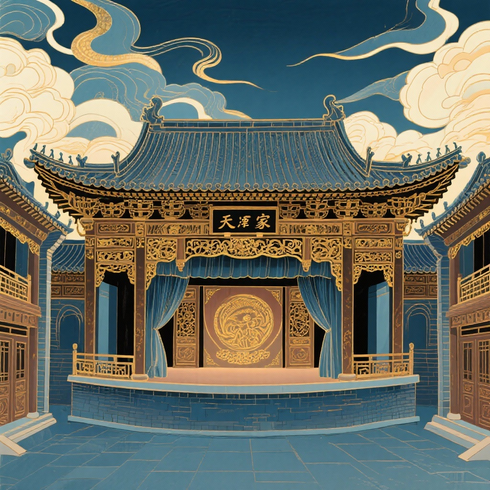
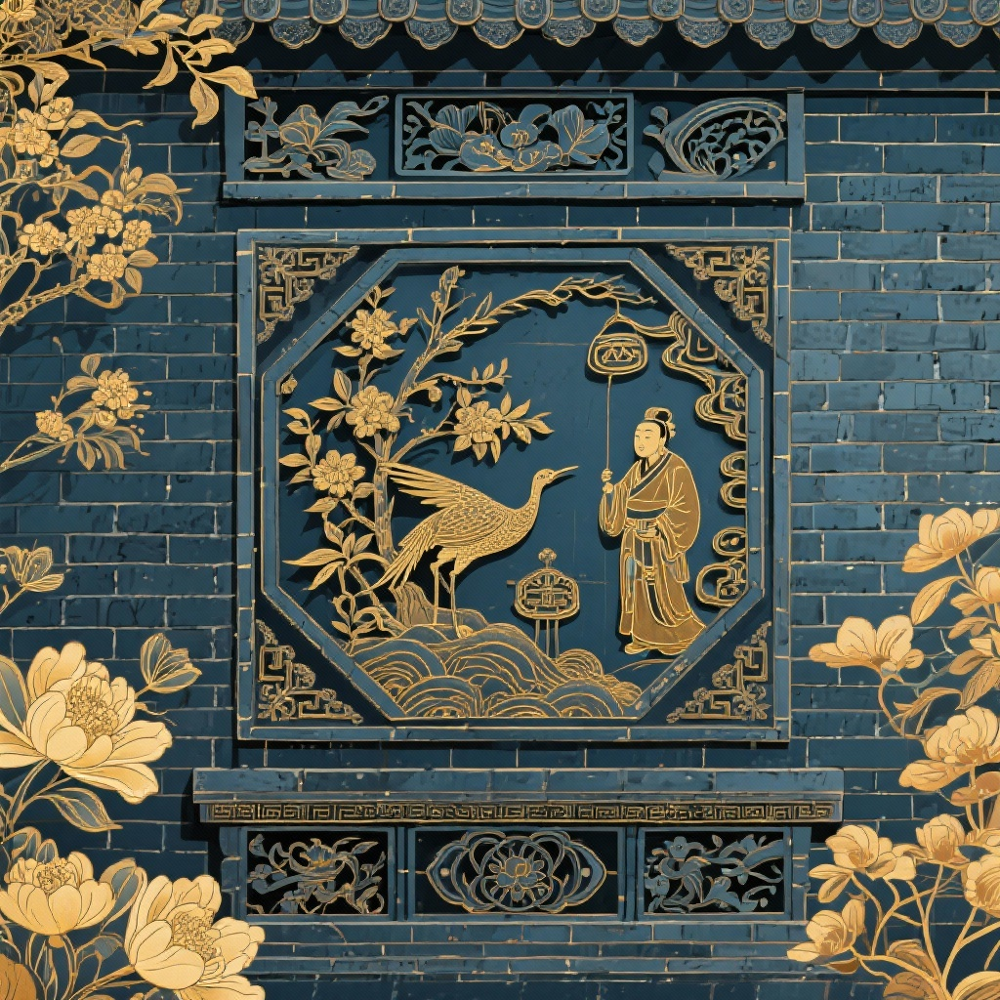
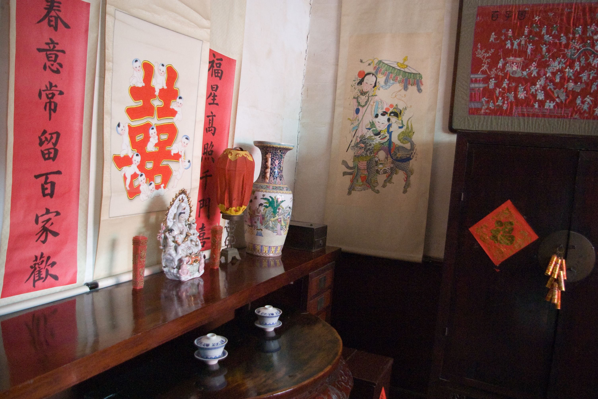

大院三绝 · 北方民居巅峰之作
砖雕之细腻、戏楼之宏敞、石雕木刻之典雅，见证清代北方民居建筑艺术的高峰
能容两百人的华北民间第一戏楼
石家大院戏楼面积达数百平方米，是华北民宅中最大、保存最完好的封闭式室内戏楼。
全戏楼由24根朱漆立柱支撑，设看台、包厢与戏台。顶棚设藻井回音构造，台下深埋大缸增强声音混响共鸣，无需现代扩音即可使字正腔圆清晰传遍各角落。京剧大师孙菊仙、谭鑫培等名角当年均曾在此献艺登台。

百余幅整砖透雕与吉祥吉语
石家大院的砖雕被誉为“北方一绝”。主要饰于门楣、影壁、墀头、山墙与博风板之上。
采用特制青砖，经画样、打坯、出细、镂雕等多道严苛工序。题材广泛包涵“福禄寿喜”、“五福捧寿”、“松鹤延年”、“岁寒三友”以及渔樵耕读民间传说，刀法圆润，层层通透。

轴线对称、院中有院的通脊套院
尊美堂坐北朝南，以中轴线甬道为脊梁，两旁对称排列多进四合院与跨院。甬道铺以青石，宽敞深邃。
“庭院深深深几许”，大院各门相通又各有私密，长辈居正房、晚辈居厢房，书房、客房、祠堂、账房各得其所，体现了中国传统礼制与大家族秩序美学。

彩绘金描的垂花门与隔扇
院内各道二门多为精巧的垂花门，雕刻精致的倒垂花柱与雀替，施以贴金彩绘，华贵内敛。
正厅隔扇木刻选用上等楠木与红木，浅浮雕花鸟虫鱼、博古案台，工艺精巧至极，阳光照射下光影流转，宛如一座明清民间工艺艺术博物馆。
楠木浮雕隔扇
融合京作官府之端庄与扬州细作之灵巧，百余年岁月洗礼依然毫无变形，木香犹存。
津门八大家沧桑纪实
石家始祖由山东迁居杨柳青，凭借运河水路船队与粮食、盐业贸易迅速累资巨万。
石家迁至杨柳青，靠运河漕运盐业发迹。
津商发祥石元仕接管堂产，耗费巨资历时三年修建尊美堂大院及戏楼，极一时之盛。
天津市人民政府实施全面抢修复原，成立杨柳青博物馆对外开放，再现大院风貌。
国务院公布为第六批全国重点文物保护单位，成为中国北方运河重镇民居建筑的活化石。
📍 游览攻略与实用指南
门票：27元/人（学生/老年人优惠票14元）
开放时间：09:00 - 16:30（全年无休，16:00停止售票）
地址：天津市西青区杨柳青镇御河桥西御河人家斜对面
公交：天津市区乘153路、175路、824路或便民9路至【石家大院】站即达
自驾：西青道直行至杨柳青古镇，车程约35分钟
杨柳青木版年画博物馆（体验传统套印年画手作）
御河风情街、普明寺、杨柳青文昌阁